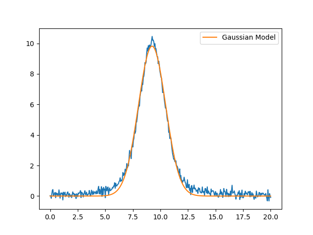
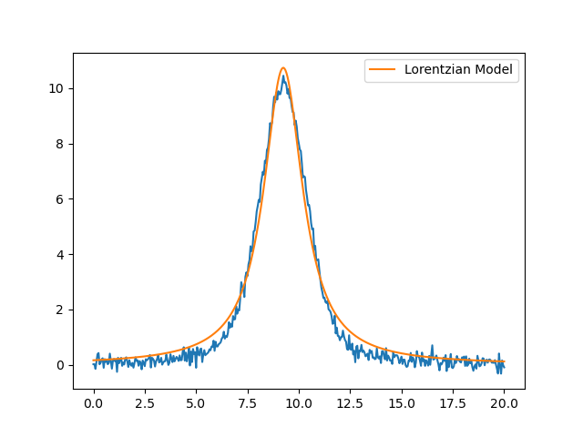
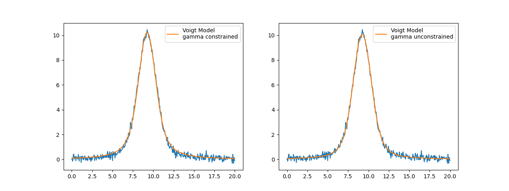

Note
Click here to download the full example code
doc_builtinmodels_peakmodels.py¶
- 
- 
- 
Out:
[[Model]]
Model(gaussian)
[[Fit Statistics]]
# fitting method = leastsq
# function evals = 25
# data points = 401
# variables = 3
chi-square = 29.9943157
reduced chi-square = 0.07536260
Akaike info crit = -1033.77437
Bayesian info crit = -1021.79248
[[Variables]]
amplitude: 30.3135620 +/- 0.15712686 (0.52%) (init = 43.62238)
center: 9.24277047 +/- 0.00737496 (0.08%) (init = 9.25)
sigma: 1.23218359 +/- 0.00737496 (0.60%) (init = 1.35)
fwhm: 2.90157056 +/- 0.01736670 (0.60%) == '2.3548200*sigma'
height: 9.81457817 +/- 0.05087283 (0.52%) == '0.3989423*amplitude/max(1e-15, sigma)'
[[Correlations]] (unreported correlations are < 0.250)
C(amplitude, sigma) = 0.577
[[Model]]
Model(lorentzian)
[[Fit Statistics]]
# fitting method = leastsq
# function evals = 21
# data points = 401
# variables = 3
chi-square = 53.7535387
reduced chi-square = 0.13505914
Akaike info crit = -799.830322
Bayesian info crit = -787.848438
[[Variables]]
amplitude: 38.9727645 +/- 0.31386183 (0.81%) (init = 54.52798)
center: 9.24438944 +/- 0.00927619 (0.10%) (init = 9.25)
sigma: 1.15483925 +/- 0.01315659 (1.14%) (init = 1.35)
fwhm: 2.30967850 +/- 0.02631318 (1.14%) == '2.0000000*sigma'
height: 10.7421156 +/- 0.08633945 (0.80%) == '0.3183099*amplitude/max(1e-15, sigma)'
[[Correlations]] (unreported correlations are < 0.250)
C(amplitude, sigma) = 0.709
[[Model]]
Model(voigt)
[[Fit Statistics]]
# fitting method = leastsq
# function evals = 21
# data points = 401
# variables = 3
chi-square = 14.5448627
reduced chi-square = 0.03654488
Akaike info crit = -1324.00615
Bayesian info crit = -1312.02427
[[Variables]]
amplitude: 35.7554146 +/- 0.13861321 (0.39%) (init = 65.43358)
center: 9.24411150 +/- 0.00505482 (0.05%) (init = 9.25)
sigma: 0.73015627 +/- 0.00368460 (0.50%) (init = 0.8775)
gamma: 0.73015627 +/- 0.00368460 (0.50%) == 'sigma'
fwhm: 2.62950494 +/- 0.00806900 (0.31%) == '1.0692*gamma+sqrt(0.8664*gamma**2+5.545083*sigma**2)'
height: 10.2203969 +/- 0.03009415 (0.29%) == '(amplitude/(max(1e-15, sigma*sqrt(2*pi))))*wofz((1j*gamma)/(max(1e-15, sigma*sqrt(2)))).real'
[[Correlations]] (unreported correlations are < 0.250)
C(amplitude, sigma) = 0.651
# <examples/doc_builtinmodels_peakmodels.py>
import matplotlib.pyplot as plt
from numpy import loadtxt
from lmfit.models import GaussianModel, LorentzianModel, VoigtModel
data = loadtxt('test_peak.dat')
x = data[:, 0]
y = data[:, 1]
# Gaussian model
mod = GaussianModel()
pars = mod.guess(y, x=x)
out = mod.fit(y, pars, x=x)
print(out.fit_report(min_correl=0.25))
plt.plot(x, y, 'b-')
plt.plot(x, out.best_fit, 'r-', label='Gaussian Model')
plt.legend(loc='best')
plt.show()
# Lorentzian model
mod = LorentzianModel()
pars = mod.guess(y, x=x)
out = mod.fit(y, pars, x=x)
print(out.fit_report(min_correl=0.25))
plt.figure()
plt.plot(x, y, 'b-')
plt.plot(x, out.best_fit, 'r-', label='Lorentzian Model')
plt.legend(loc='best')
plt.show()
# Voigt model
mod = VoigtModel()
pars = mod.guess(y, x=x)
out = mod.fit(y, pars, x=x)
print(out.fit_report(min_correl=0.25))
fig, axes = plt.subplots(1, 2, figsize=(12.8, 4.8))
axes[0].plot(x, y, 'b-')
axes[0].plot(x, out.best_fit, 'r-', label='Voigt Model\ngamma constrained')
axes[0].legend(loc='best')
# free gamma parameter
pars['gamma'].set(value=0.7, vary=True, expr='')
out_gamma = mod.fit(y, pars, x=x)
axes[1].plot(x, y, 'b-')
axes[1].plot(x, out_gamma.best_fit, 'r-', label='Voigt Model\ngamma unconstrained')
axes[1].legend(loc='best')
plt.show()
# <end examples/doc_builtinmodels_peakmodels.py>
Total running time of the script: ( 0 minutes 0.284 seconds)